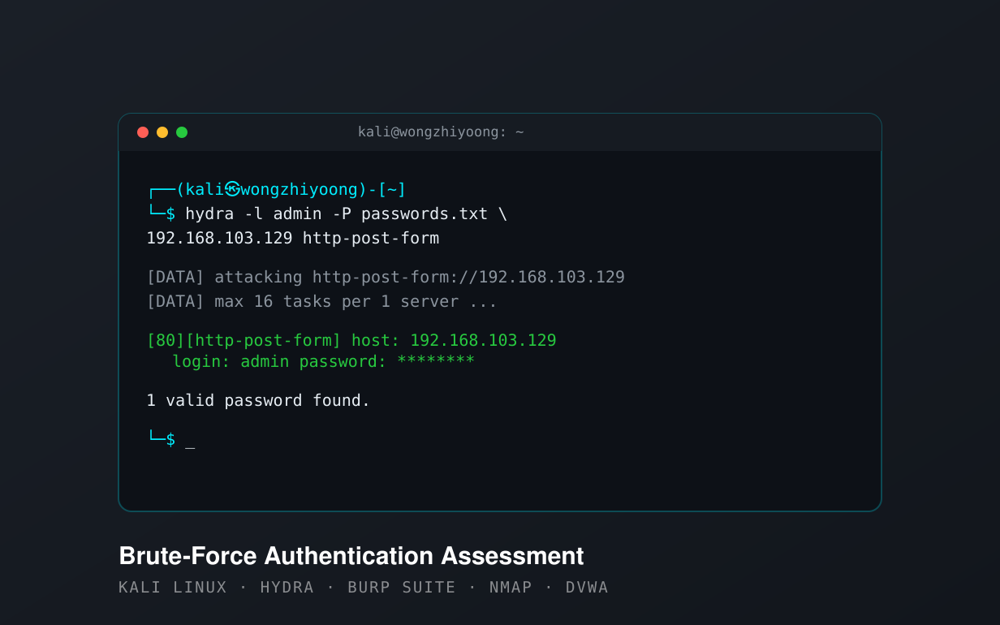

An ethical hacking exercise testing how well a web login stands up to a brute-force attack — carried out end to end in an isolated Kali Linux lab, following the same methodology a real penetration tester would use, and closing with the controls that would have stopped it.
Conducted entirely against a deliberately vulnerable target (DVWA) on a private, disconnected network. No real systems were involved.
Authentication is usually the first line of defence between an attacker and an organisation's data — and it is also one of the most commonly broken. Weak or reused passwords, no account lockout and no multi-factor authentication turn a login form into an open door. The 2021 Colonial Pipeline breach, which began with a single compromised VPN credential on an account without MFA, is the textbook example of how far a weak credential can reach.
This assessment reproduces that class of weakness safely. Framed around a fictional logistics company and its employee portal, it asks a simple question: if the passwords are weak and the usual protections are missing, how quickly can an attacker get in? To answer it, I built a two-machine lab — Kali Linux as the attacker, a deliberately vulnerable web application (DVWA) as the target — on an isolated host-only network, and worked through a full penetration-testing methodology against it.
The point was not just to break in, but to produce the evidence that justifies fixing it: which weaknesses combined to make the attack possible, and which specific controls would have stopped it.
Located the target on the isolated network with netdiscover,
confirming connectivity between the attacker and victim machines before
anything else.
Enumerated open ports and services with nmap -sV, identifying
the HTTP service hosting the application and its version.
Examined the login page in the browser to map the authentication interface — the username field, password field and login action.
Intercepted a failed login with Burp Suite to capture the request method, the login URL, the exact parameters, and the failure message — everything Hydra needs to be configured correctly.
Ran Hydra as an http-post-form attack with a known username
and a password wordlist. It found valid credentials within seconds.
Logged in manually with the recovered credentials to confirm the finding and reach the portal dashboard — proving the impact rather than assuming it.

No single flaw made the attack work — it was the combination. Each weakness on its own raises risk; together they leave a login with almost nothing standing between an automated tool and a valid account.
The valid password sat in a small wordlist, so it fell almost immediately. Strong, complex passwords would have made the attack impractical.
Repeated failed attempts were accepted without ever locking the account, letting the tool keep guessing indefinitely.
Login requests were processed with no throttling, so Hydra could test passwords as fast as the server would answer.
A username and password were the only barrier, so a single recovered credential was enough for full access.
Effective authentication security is layered — no one control is enough, but together they close off the attack demonstrated here.